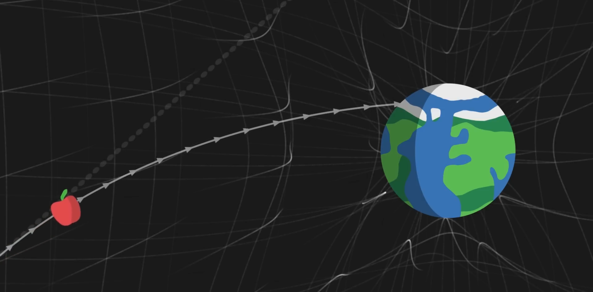
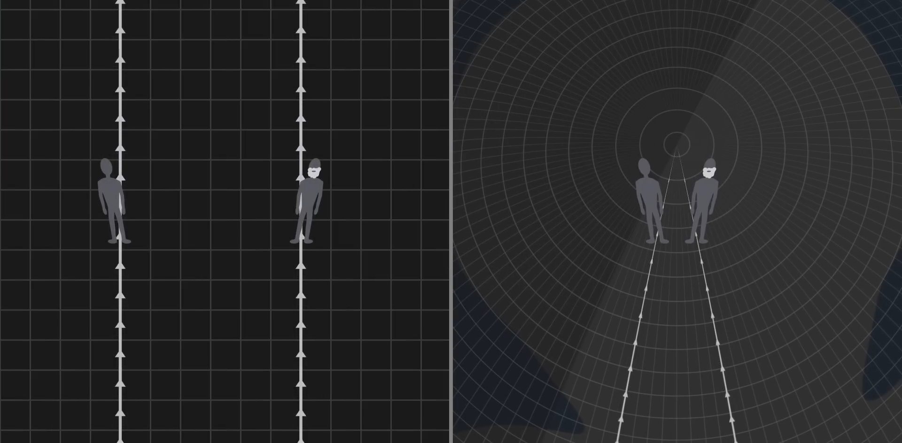
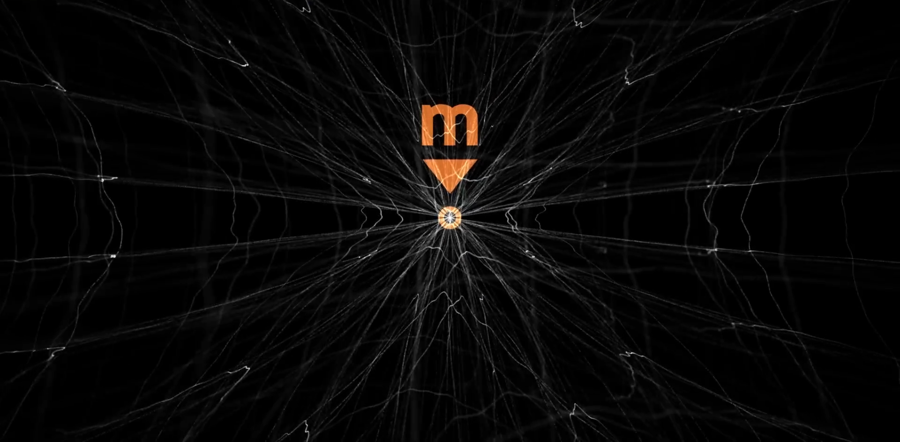
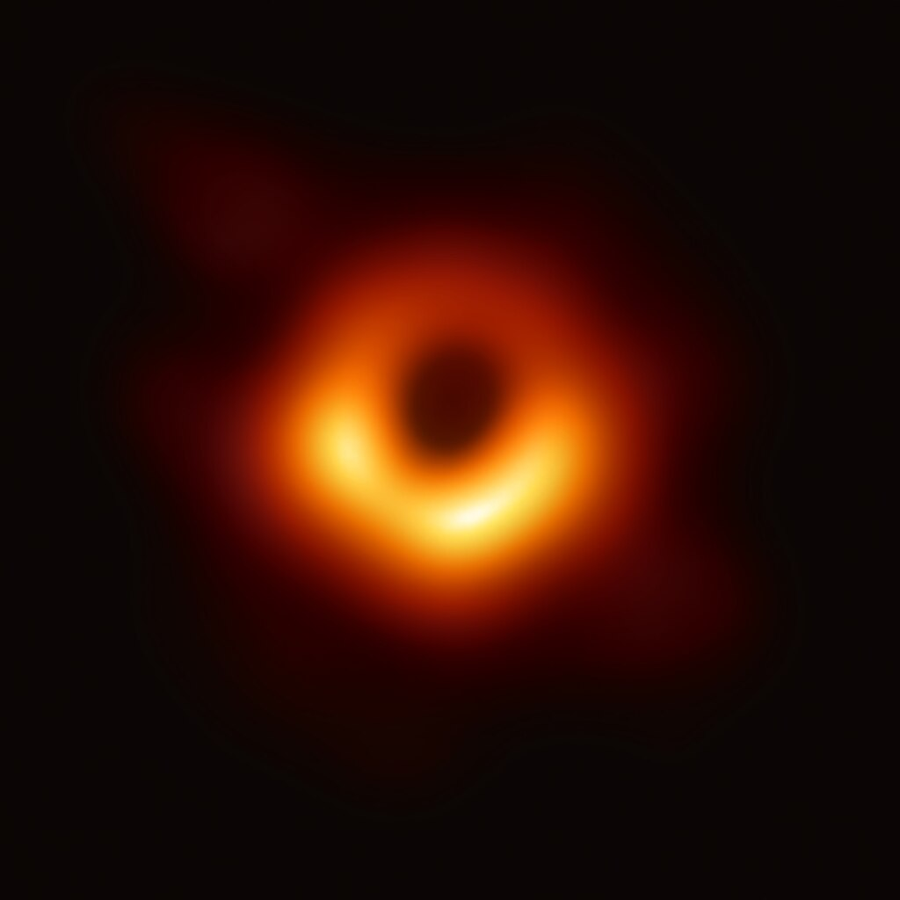
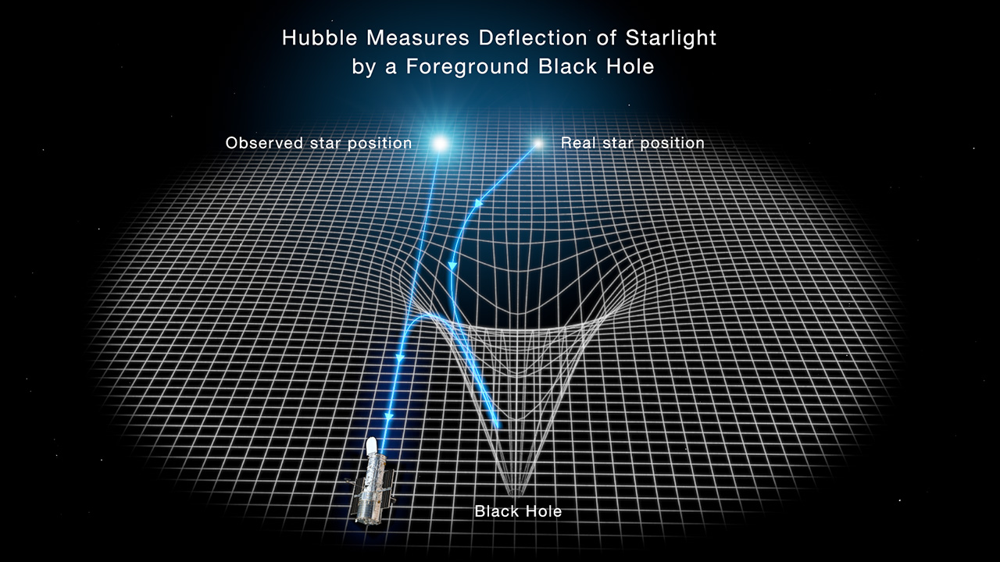
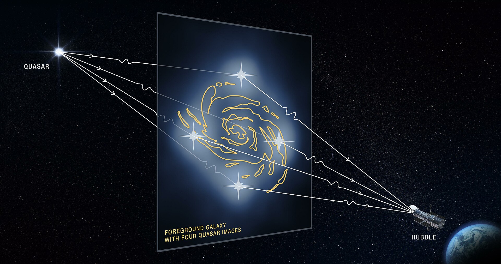
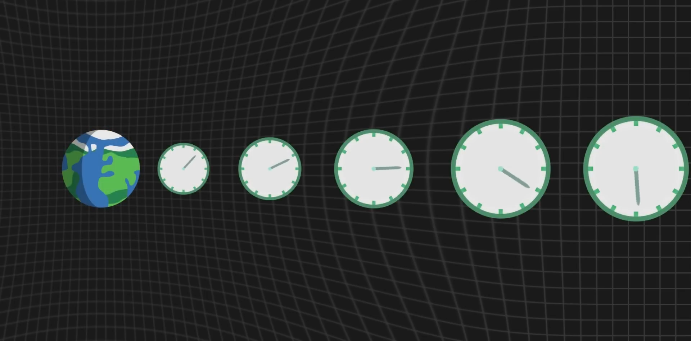

«Գրավիտացիա» դա Տիեզերքի հիմնարար երևույթներից է որը հակված է առարկաները մոտեցնել իրար, Եթե քարը ընկնում է երկրի վրա, լուսինը պտտվում է երկրի շուրջ և երկիրը արեգակի շուրջ, դա գրավիտացիաի շնորհիվ է որը գործում է արարկաների միջև
Սկզբից կմտացենք որ գրավիտացիան դա ուժ է որը գործում է՝ գրավելով առարկաները իրենց զանգվածով, ինչքանել հսկայական զանգված ունի այնքան ել ավելի ուժեղ այն ձքելքու է դեպի իրան
Այս գրավիտացիայի ներկայացումը որպես ուժ հնարավորություն է տալիս մեզ հասկանալ առարկաների վարքագիծը երբ ընկնում են այլև թէ ունց են մոլորակները պտտվում արևի շուրջ, Բայց իրականում որոշակի նուրբ ցուցանիշներ ցույցեն տալիս որ գրավիտացիան «ուժ» չի
Օրինակ։ երբ մենք հետևում ենք արբանըակի ընկնելը երկրի վրա, եթե գրավիտացիան ուժ լիներ ապա այն պտի ընկնի ուղիղ գծով դեպի մոլորակի կենտրոնին
բայց երբ մենք կատարումենք փորձարումներ մենք տեսնումենք որ արբանյակի հետագիծը թեթևակի թեքվել է Երկրի պտույտի ուղությամբ
Մեկ այլ ցուցանիշ, այն է, որ Մերկուրիի ուղեծրը ժամանակի ընթացքում փոխում է կողմնորոշումը որոշակի արագությամբ, եթե գրավիտացիան ուժ էր, ապա մենք կարող էինք ճշգրիտ կանխատեսել նրա արագությունը, որով պետք է փոխվի այս ուղեծիրը, սակայն երբ մենք դիտարկում ենք ուղեծիրը փոխվում է մի փոքր այլ արագությամբ:
«Տարածություն և ժամանակ» (Space and Time) սա է այն ինչ մենք անվանումենք «Հարաբերականության ընդհանուր տեսություն | General Relativity»
Հասկանալու համար, General Relativity հիմնված է գրեթե ամբողջությամբ համարժեքության սկզբունքի վրա
Համարժեքության սկզբունքը ասում է թէ բոլոր առարկաները ընկնում են նույն ձև Ասում է որ ազատ ընկնում ը դա ոչ թէ ուժի ազդեցությամբ է ոչ ել արագացվաց առակայի շարժումը ընկելու ժամանակ,
այլև ազատ ընկնումը դա առարկաների բնական շարժում է
Երբ առարկան ընկնում է երկրի վրա, իրականում առարկաները մնումեն անշարժ, այլև գետնիննա մոտենում առարկաներին․ Մարդը կանգնաց երկրի վրա մշտական դիմադրություն ազատ անկմանը և անընդհատ վերակայող արագացմանը․
Այդ պատճառով ել մենք զգումենք մեր զանգվածը երբ կանգնածենք գետնի վրա․ ազատ անկման ժամանակ մեր մարմինը շարժվում է իր բնական արագությամբ
General Relativity մեջ գրավիտացիան այլևս ուժ չի, կարելի է ասել որ «գրավիատացիա» հասկածություն չկա
Եթե մարմինը թողնում է տպավորություն որ այն ընկնում է և իրանք ձքտումեն իրար
Դա որովհետև նրանք շարժվում են բնականորեն անշարժ, և տիեզերքի երկրաչափությունը կոր է.
Առարկաները չեն ձքտում իրար, նրանք ուղղակի շարժվում են ուղիղ գծերով և ծռում Տարածություն ժամանակը իրանց շուրջ իրանց զանգվածի պատճարով
Ամենա կարևոր միտքը General Relativity մեջ բոլոր առարկաները որոնք ունեն զանգված ծռումեն Տարածություն ժամանակը իրենց շուրջ․
Եթե պատկերացնենք մեր տիեզերքը որպես հսկայական ցանց, տարածության ժամանակի ցանց ապա հսկայական առարկա իսկապես ազդեցություն կունենա իր շուրջը տարածության ժամանակի ծռման վրա, Ուղղության հեռավորության կամ նույնիսկ ժամանակի հոսքի հասկացությունները ծռված են, փոփոխված առարկայի առկայությամբ.
Առարկան ուղիղ գծով շարժվելու միտում կունենա․
Օրինակ եթե մենք գծենք խնձոր գալակտիկաների միջև դատարկ տառածության մեջ
Այն կշարունակի իրա շարժումը ուղիղ գծով միշտ նույն արագությամբ․ Բայց եթե գծենք նույն խնձորը հսկայական առակայի մոտ, Օռինակ Երկիր․ Քանի որ Երկիրը հսկայական մարմին է այն ծռում է տարածություն ժամանակը իր շուրջ
Ուղիղ գծերը այլևս ուղիղ չեն, ծռաց դեպի Երկրի ուղությամբ․ Ահա թե երբ մենք գցումենք խնձորը, նա շարժվելու է ուղիղ հետագծով, բայց քանի որ ուղիղ գծերը ծռացեն Երկրի զանգվածով, խնձորը մոտենալու է Երկրին, Դա է ինչ մենք կոչումենք «Գրավիտացիա, Ջքողական ուժ»

Ավելի հասկանալու համար պատկերացնենք երկու երևույթ
Մի կողմում երկու մարդ շարժվում է հարթ տարածության վրա դեպի վերև, Մյուս կողմում երկու մարդ շարժվումեն ոչ թէ հարթ տարածության վրա այլև երկրի մակերեցի վրա, որը գնդաձև է, և շարժվումեն դեպի հյուսիս, Արաջի դեպքում, երկու մարդ շարժվելու են զուգահեռ ուղիղ գծով և երբեք չեն հանդիպելու
Երկրորդ օրինակում երկու մարդ առաջ շարվելուց կհանդիպեն երբ հասնեն հյուսիս չնայած նրանցից յուրաքանչյուրը քայլել է կատարյալ ուղիղ գծով, Գնդաձև Երկրի կորության պատճարով, այն փաստը, որ ուղիղ գծերը թեքված են դրա մակերեսին, այս երկու մարդ կմտածեն որ տարորինակ ձքողական ուժ է ազդում որը ձքում է իրանց իրար մոտ

Այս յուրօրինակ երևույթները ցույց տալու համար, որոնք ի հայտ են գալիս General Relativity մեջ
Եկեք կենտրոնանանք տիեզերքի մեկ հետաքրքրաշարժ օբյեկտի՝ վրա, Սև Խոռոչ (Black Hole)
Սև խոռոչը դա հսկայական առարկա է որի նյութը հիմնականում պարունակվում է մեկ կետում, Մենք կոչումենք այս կետը «Գրավիտացիոն եզակիություն | Gravitational Singularity»

Տիեզերքի այս ճշգրիտ կետում տարածություն-ժամանակի գործվածքը ծրված է մինչև անսահմանություն, և ժամանակակից գիտությունը ի վիճակի չէ ամբողջությամբ հասկանալ, թե ինչ է տեղի ունենում այնտեղ: Եզակիության մոտ ծռությունը այնքան հզոր է որ բոլոր ուղիղ գծերը տանումեն դեպի եզակիությանը, այստեղ ոչմի առարկա հնարավորություն չունի փախնելու, նույնիսկ Լույսի ճարագայթի համար այն միշտ ընկնելու է դեպի սև խոռոչի կենտրոնը, Քանի որ ոչ լույսը, ոչ ճառագայթում կարող է փախնել սև խոռոչից, մենք տեսնումենք այն վորպես սև մարմին, Այս գրավման գոտուց դուրս՝ իրադարձությունների հորիզոնից դուրս «Event Horizon» Սև խոռոչը վարվում է այնպես, ինչպես ցանկացած այլ առարկա․

Messier 87 կենրոնական Սև Խոռոչ, նկարված է Event Horizon Telescope-ով
սակայն, եթե մենք գտնվենք հորիզոնից բավական հեռու, ինչպես դա մոլորակի կամ աստղի դեպքում, ապա հնարավոր է կայուն ուղեծիր ունենալ սև խոռոչի շուրջ, Մոտակա անցնող առարկան փոքր-ինչ շեղվելու է, բայց կկարողանա խուսափել իր գրավիտացիոն ձգողականությունից․
Մասնավորապես, հեռավոր աստղերից եկող լույսի ճառագայթները փոխում են ուղղությունը, երբ մոտենում են սև խոռոչին, այդ իսկ պատճառով, եթե մենք դիտում ենք սև խոռոչը դեմ առ դեմ, մենք կարող ենք տեսնել հեռավոր աստղերի աղավաղված պատկերը, որոնք իրականում գտնվում են դրա հետևում: Սա է ինչ կոչվում է գրավիտացիոն ոսպնյակավորում․
Լենզավորված նկարը կարող է խաչի նման կրկնվել, Սա կոչվում է Այնշտայնի Խաչ


Ամենաուշագրավ երևույթը այն է, ինչ մենք անվանում ենք գրավիտացիոն ժամանակի ընդլայնում, երբ մենք հայտնվում ենք սև խոռոչի նման զանգվածային օբյեկտի մոտ, ուղիղ գծերը, որոնց հետևում ենք, ծռվում են ոչ միայն տարածության մեջ, այլև ժամանակի մեջ, հետևաբար ժամանակի հոսքը փոփոխվում է ըստ հեռավորությունը, որով մենք գտնվում ենք զանգվածային մարմնից.
Լինելով շատ մոտիկ հորիզոնին, հնարավոր է որ մեր համար հոսող ժամանակը, լինի մի քանի տարիներ ուրիշի համար․
Կարճ ասաց, ինչքան մենք մոտենումենք զանգվածով մարմնին, այնքան դանդաղ ե հոսում ժամանակը հարաբերական մեզ

Ժամանակի ընդլաընումը չափազանց կարևոր է Երկրի վրա: Շատ կարևոր է հաշվի առնել այն, երբ մենք օրինակ նախագծում ենք GPS արբանյակներ, որ մենք կարող ենք ապահովել դրանց ներքին ժամացույցների համաժամացումը:
Բացի գրավիտացիայից, հարաբերականության ընդհանուր տեսությունը բերում է նաև մի շարք այլ հետևանքներ, որոնցից մեկն այն է, որ Տիեզերական ժամանակը անմիջապես չի աղավաղվում, ինչպես կտոր, եթե որևէ առարկա հայտնվի ոչ մի տեղից, նրա գրավիտացիոն ազդեցությունը որոշ ժամանակ կպահանջի տարածվել Տիեզերական ժամանակի միջով՝ ոլորելով տիեզերքի երկրաչափությունը երբ այն զարգանում է, միշտ լույսի արագությամբ:
Այս առանձնահատկությունը հանգեցնում է գրավիտացիոն ալիքների գոյությանը, տիեզերական ժամանակի աղավաղման երևույթներ որոնք լույսի արագությամբ տարածվում են տիեզերքում։ այս գրավիտացիոն ալիքներն առաջանում են Երկրից լուսային տարիներ հեռավորության վրա՝ աղետալի իրադարձությունների հետևանքով, ինչպիսիք են Սև խոռոչների բախումը: Ալիքները պարբերաբար անցնում են մեր միջով, թեթևակի աղավաղելով մոլորակը և նրա վրայի ամեն ինչ,